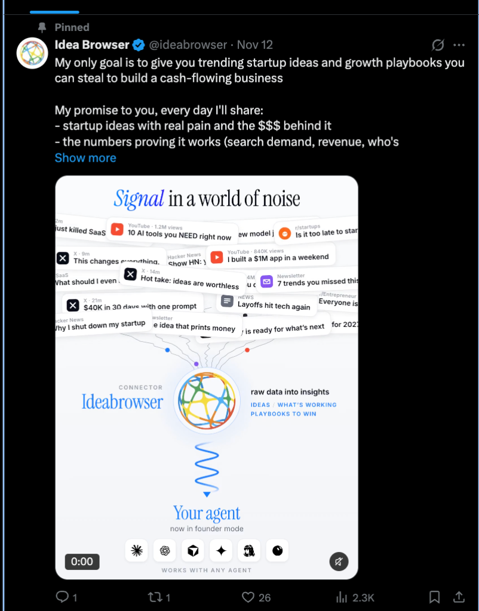
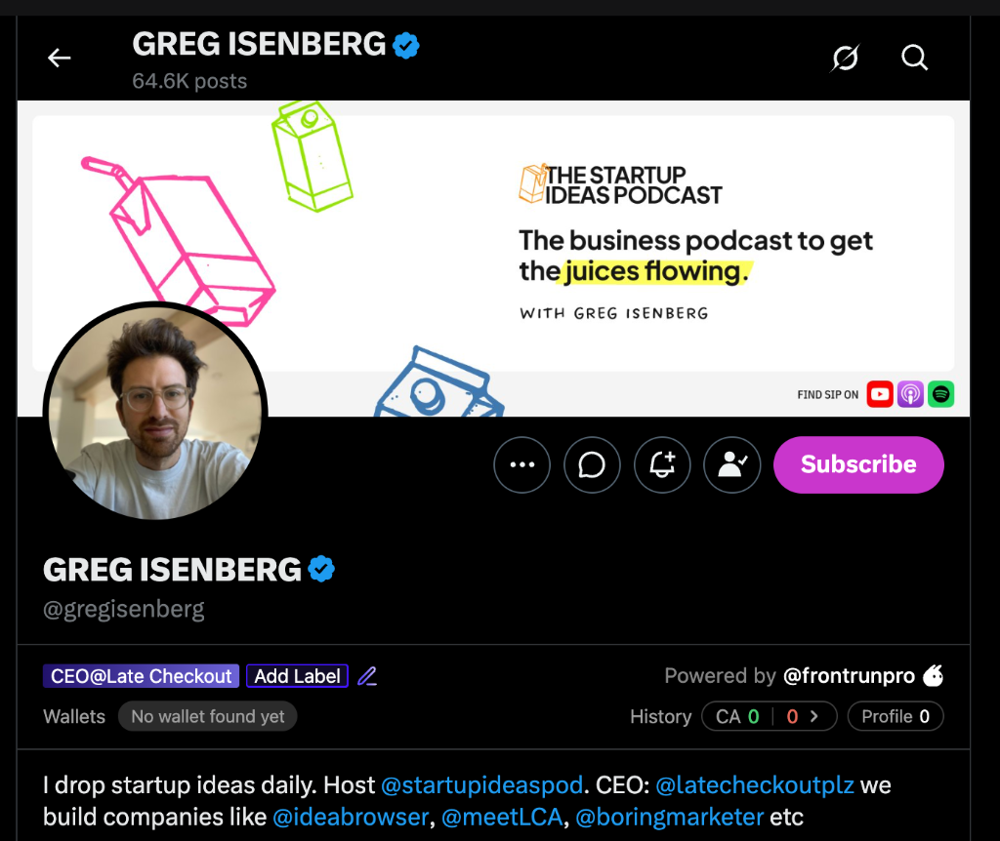
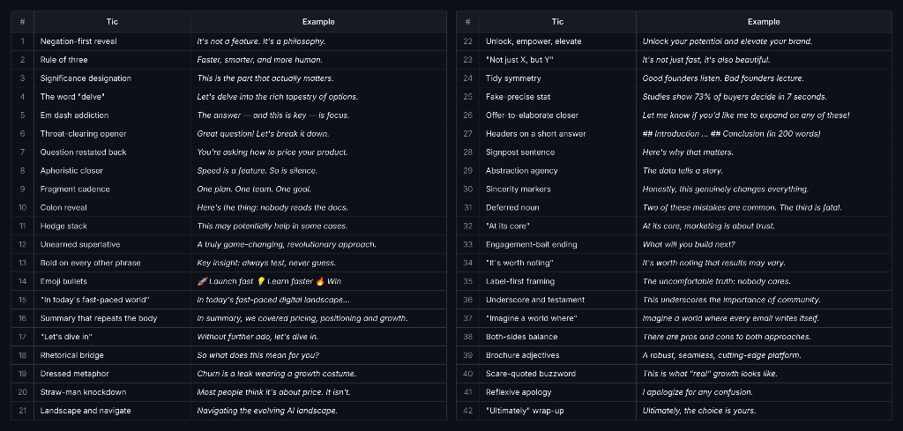
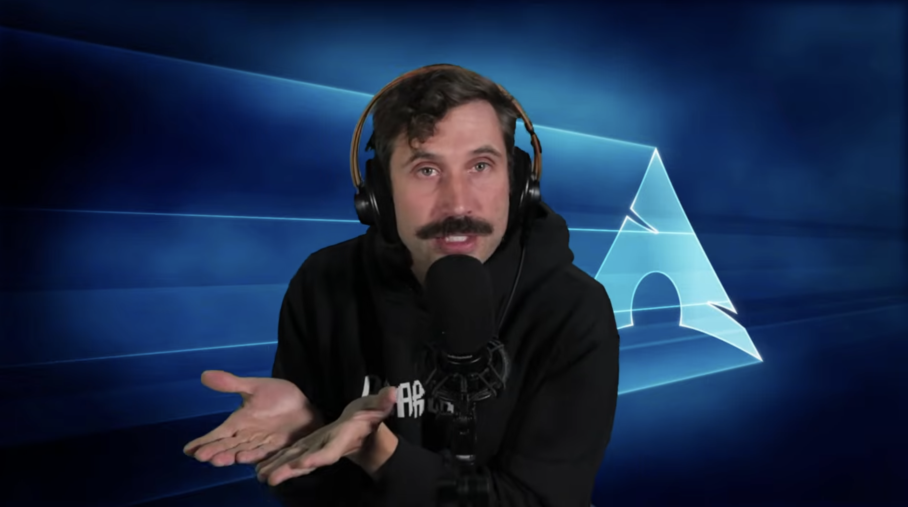
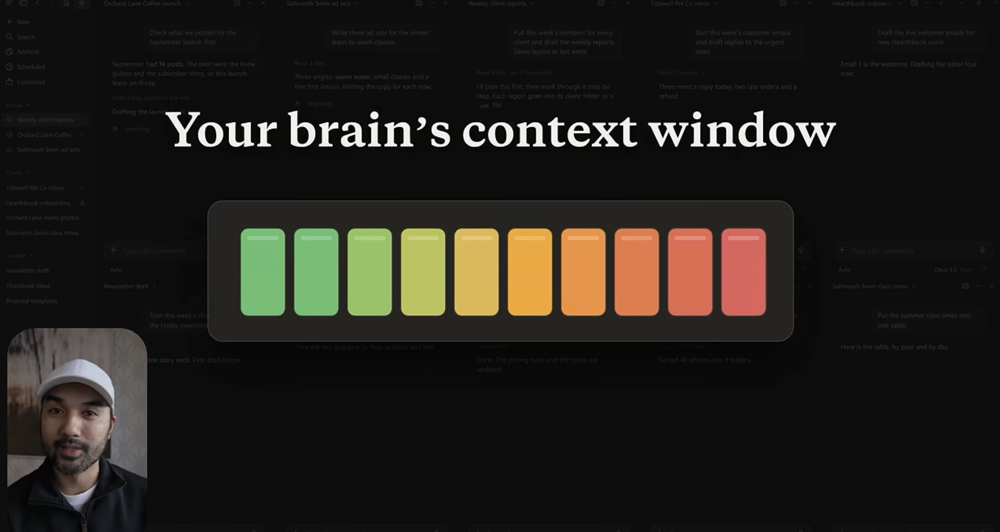
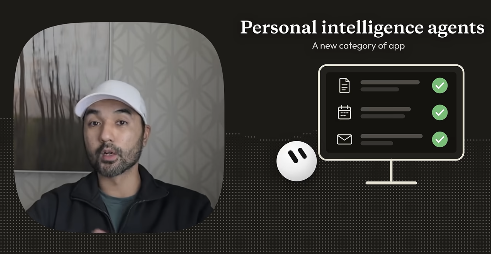

27 references. Each carries what it is and the rule worth taking. Stills only show layout — the motion lives in the two videos below, and these frames are taken from them.
01-ideabrowser-everyone-is-lazy.pngeveryone is lazy - the purchase test02-alex-kwon-laziest-person.pngdesign for the laziest user, one action on screen03-greg-isenberg-youtube-channel.pngone promise in the banner, reads at thumbnail size

04-ideabrowser-pinned-signal-in-noise.pngbranded artwork carries the pin05-greg-isenberg-pinned-content-strategy.pngthe pin is the content strategy

06-greg-isenberg-x-profile-frontrun.pngsame face handle banner across X and YouTube, product panel07-boldness-to-brains-ratio.pngtwo axes, four quadrants, honest placing08-x-following-political-list.pngthe follow graph is the editorial brief09-frontrun-pro-trending-panel.pngdecision-maker panel, windowed strength10-hermes-bot-roster.pngnames carry the job11-skills-model-designsystem.pngskills + model + design system, three legs12-email-list-hero-serif.pngone headline, one italic, one proof line, one action

13-llm-writing-ticks-42.pngforty-two AI writing tells - the anti-rule sheet14-zlusd-private-transfer-deck.pngprivate vs confidential made visible, six-step flow15-nord-dedicated-ip-plans.pngdedicated IP pricing: $4.19/mo on 2 years, $5.89 on 1 year, $8.99 monthly16-split-panel-talking-head-1.pngTwo devices from one talk: a two-tone comparison panel (sage green vs coral red) with hand-drawn geometry, and the same speaker keyed over a deep blue gradient with a translucent mark behind himThe split panel does the argument with no words; the keying lets a mark sit BEHIND the subject; black hoodie on saturated ground separates with zero effort

17-split-panel-talking-head-2.pngTwo devices from one talk: a two-tone comparison panel (sage green vs coral red) with hand-drawn geometry, and the same speaker keyed over a deep blue gradient with a translucent mark behind himThe split panel does the argument with no words; the keying lets a mark sit BEHIND the subject; black hoodie on saturated ground separates with zero effort18-dark-thread-canvas.pngThree task columns floating on near-black, the subject inset bottom-left in a rounded window, three pill bars turning green as work completes.The ground is a product UI, not a backdrop: the interface IS the set. Subject never larger than a fifth of the frame. Green carries progress, never decoration.watch the motion →

19-serif-claim-pill-scale.pngA serif headline ('Your brain's context window') over a row of ten rounded bars grading green to red.One serif sentence carries the whole idea; a single row of shapes proves it. This is the house move: claim in serif, evidence as geometry.watch the motion →20-annotation-arrows.pngA screenshot of a real post, with orange marker highlights and hand-drawn white arrows labelled 'Works' and 'Looks'.Annotation as argument: two arrows and two words explain a product decision. Orange only on the two phrases that matter.watch the motion →21-dashboard-half.pngSubject in a rounded window on the left third; a full dark dashboard mock on the right with an orange sun mark above it.The most reusable layout in the set: person left, live-looking artefact right, dotted texture in the lower third to stop the black going flat.watch the motion →

22-icon-diagram.png'Personal intelligence agents' in serif, subtitle in sans, a monitor outline with three check-marked rows and a white circle with a pause glyph.Thin white line icons at one weight, one green tick repeated three times. The pause circle is a character, not an icon — a small mascot earns warmth.watch the motion →23-orange-badge.pngThe same dashboard again, now carrying an orange 'AI-powered' badge, an ask bar and the words 'LLM-powered' set huge under it.Repeat the artefact and add one element: the difference between the two frames IS the explanation. Accent used once per frame.watch the motion →24-cloud-diagram.png'Projects' in serif over a cloud outline containing an orange sun mark, three crab-glyph nodes and a laptop outline below.A diagram is allowed to be friendly. Two stroke weights (blue cloud, white laptop), orange kept for the brand mark only.watch the motion →25-paper-collage.pngA mock handwritten note showing HTML/CSS next to a torn-paper 'Video model' card with a red X, plus a green check on 'Much cheaper'.When the argument is a comparison, leave the interface entirely: paper, marker, torn edge. Tactile beats polished for one beat, then back.watch the motion →26-app-icon-grid.pngSix app icons in a 3×2 grid with names under them, on black, subject still at left.Icons as evidence in a taxonomy frame. Nothing else on screen: no paragraph, no bullet, no arrow. The grid is the sentence.watch the motion →27-full-room-honest.pngThe subject alone, full frame, real room, real window, hands moving, no graphics at all.The reset shot. After five designed frames, one honest one buys back trust — and it is free to produce.watch the motion →